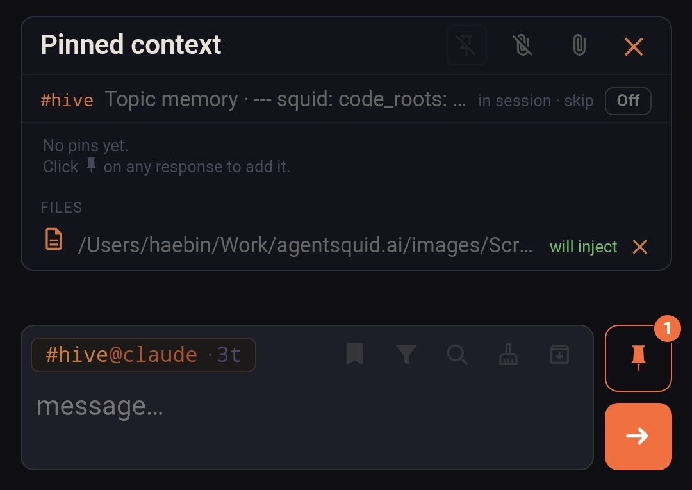

Basic Usage
Tags are the UI for agent work: lightweight enough to create as you type, durable enough to recover later.
#topic@agent messageContinue that topic and agent session.#topic@agent! messageRun a parallel adhoc turn with no session history (a.k.a Goldfish mode).#topic@agent!3 messageRun adhoc with only the last three exchanges as context./f, /filterFilter history to the current topic/agent lane./s, /searchSearch history, with the latest matching results shown first.Autocomplete makes routes fast to edit
Start typing # or @ and Squid suggests matching topics and agents. Press Tab to accept the highlighted completion. Topics remember their most recently used agent, so selecting or entering #release is enough to continue with that agent; you do not need to type the full #release@claude route every time.
Route parts behave like editable chips. With the caret at the end of a route, one Backspace removes the complete agent name, and another removes the complete topic name. This makes it quick to keep one side of a route and swap the other.
Topics are sticky, and subtopics add sessions
Send #release@claude ... once and Squid creates or updates the release topic and remembers claude as its sticky agent. Old topics can be hidden or deleted once you're done with them.
When one topic needs multiple independent sessions, give each lane a dotted subtopic, such as #topic.cat1@claude and #topic.cat2@codex. Each subtopic keeps its own agent session while inheriting the root #topic memory, including its code root and common instructions shared across models.
Session turns queue, adhoc turns don't
Session turns for a given #topic@agent are queued in order. Adding ! runs an independent adhoc turn immediately, in parallel, without touching the main session's history — useful for a quick side question or for comparing a fresh take against the ongoing session.
This also makes context experiments easy: ask the session with #topic@agent, then ask a limited-context version with #topic@agent!3, #topic@agent!1, or a fully fresh #topic@agent!. You can see whether the long session is actually helping, or whether stale context is getting in the way.
Watching work happen
While an agent runs, Squid shows a progress bubble instead of a frozen terminal: queue position, tool activity, and streamed partial output. Use the bubble's Stop control to end a run. The Status panel also has Stop buttons for running work and × controls for individual queued prompts, so /stop, /stopall, and /deq are optional keyboard shortcuts rather than required commands.
Every completed turn carries usage metadata — tokens, cache reads/writes, reasoning tokens where available, cost, duration, and quota signals — rolled up by topic or agent in the analytics view.
Attach files as context
Attach opens Squid's file picker. Select any existing file that Squid can access and it will be included as context for the agent.
The picker can also upload a new file from the device running your browser, including a remote computer, tablet, or phone. This is useful when the clearest prompt is something visual or device-specific: attach an error-page screenshot, a design mockup, or a photo and show the model exactly what you mean.
Mobile composer
The mobile composer puts the same history tools as desktop within thumb's reach, as tappable icons instead of typed commands. Swipe up at the bottom of the chat to refresh the thread. Five icons sit next to the input box, followed by a dedicated pinned-context button and the send arrow:

- Bookmark — toggles the history view to bookmarked responses only, so you can jump back to anything you flagged without scrolling. Tap it while it's showing nothing to browse every bookmark saved in the topic instead.
- Filter — the tap equivalent of
/f//filterfrom the table above. It cycles between two states: showing only your own prompts, then narrowing further to just the current route (#topic@agent) so replies from other topics or agents don't clutter the thread. - Search — the tap equivalent of
/s//search, scoped to the current route and showing the latest matches first. - Clear (broom icon) — shortcut for typing
/clear: starts a fresh session for your next message without leaving the composer. - Archive — stashes whatever you've typed instead of sending it, so a half-written prompt isn't lost if you switch topics. Tap it with an empty composer to reopen your most recently stashed prompts.
- Pinned context — set apart with its own button and a badge showing how many responses are currently pinned. Anything pinned here is injected as context into adhoc turns (
#topic@agent!), which otherwise run with no session history — see "Session turns queue, adhoc turns don't" above.